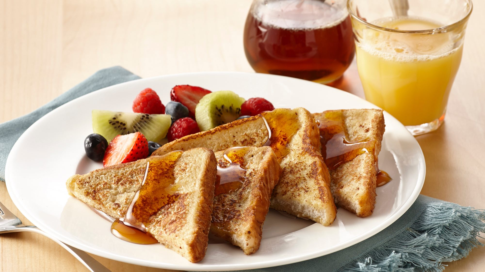

How To Make Quick & Easy French Toast

Ingredients
- 1 egg
- 1 teaspoon pure vanilla extract
- 1/2 teaspoon of ground cinnamon
- 1/4 cup of milk
- 4 slices of bread
Instructions
- Beat egg, vanilla and cinnamon in a shallow dish. Stir in milk.
- Dip bread in egg mixture, turning to coat both side evenly
- Cook bread slices on lightly greased nonstick griddle or skillet on medium heat until browned on both sides.